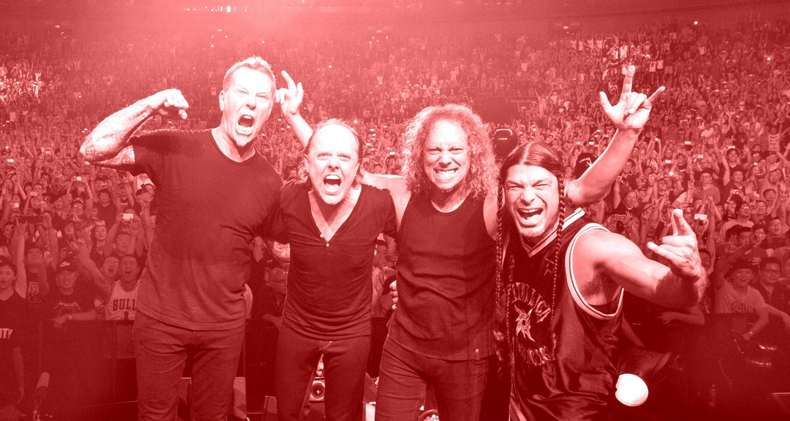

Opening Event - 2:00PM - SF Botanical Gardens
An Open Panel for students & faculty featuring:
- SFSU CFA Chapter President Brad Erickson
- Field Rep. David Steel
- SFSU President Lynn Mahoney
Topics include: Budget Cuts, Budget Transparency & more.
Live Musical Performance: Testament - 5:00PM - Spreckles Temple of Music
Originating from Berkeley, CA. Testament joins us to let loose and end Day One with a bang.
This is YOUR university - 2:00PM - SF Botanical Gardens
CFA Leaders come together to share their experience trying to unionize and share how students can take charge in community organizing.
Artist Alley from SFSU Students - All Day - SF County Fair Building
Students will table and showcase their incredible artwork for sale.
Live Musical Performance: Judas Priest - 5:00PM - Spreckles Temple of Music
Judas Priest, one of the most iconic heavy metal bands known to the world graces us with their presence.

Closing Event - 2:00PM - SF Botanical Gardens
Closing Remarks from SFSU CFA Chapter President Brad Erickson & Field Rep. David Steel
Live Musical Performance: Metallica - 5:00PM - Spreckles Temple of Music
Thrash around with one of the greatest metal bands known worldwide, METALLICA.
